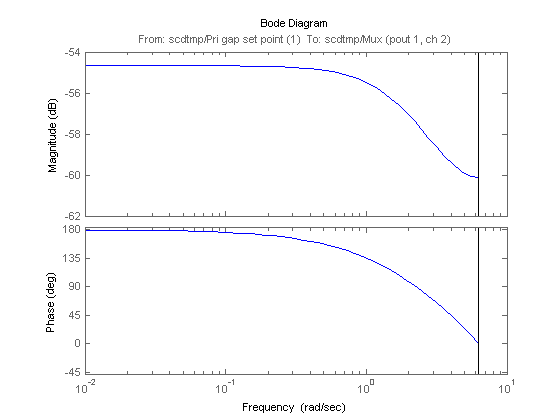

TMP Pulp Paper Process Model
Thermo-mechanical pulping (TMP) is a process used for producing mechanical pulp for newsprint. The Simulink model scdtmp is of a typical process arrangement for a two stage TMP operation: two pressured refiners operate in sequence, the primary refiner produces a course pulp from a feed of wood chips and water, the secondary refiner further develops the pulp bonding properties so that it is suitable for paper making. The refiners physically consist of two disks (either contra-rotating or one static and the other rotating) with overlaid grooved surfaces. These surfaces physically impact on a three phase flow of wood fibers, steam and water that passes from the center of the refiner disks to their periphery. The physical impact of the disk surfaces on the wood fibers: i.) breaks rigid chemical and physical bonds between them; ii.) microscopically roughens the surface of individual fibers enabling them to mesh together on the paper sheet. The primary objective of controlling the TMP plant is to apply sufficient energy to derive pulp with good physical properties without incurring excess energy costs or fiber damage due imposition of overly high stresses as fibers pass through the refiners. For practical purposes this amounts to controlling the ratio of the total electrical energy applied by the two refiners to the dry mass flow rate of wood fibers, i.e., controlling the estimated specific energy applied to the pulp. A secondary control objective is to control the ratio of dry mass flow rate (fibers) to overall mass flow rate (water & fibers) (known as pulp consistency) to a value which optimizes a trade-off between cost (energy consumed) and pulp quality.
The process I/O for a TMP system is as follows
Inputs:In this example it is desired to find a linear model of this system at a steady state operating condition for the following input set point conditions:
Open the Simulink model
open_system('scdtmp')
To get operating point specification object use the command
opspec = operspec('scdtmp')
Operating Specificaton for the Model scdtmp.
(Time-Varying Components Evaluated at time t=0)
States:
----------
(1.) scdtmp/TMP Refining Line/Fiber fill dynamics/Internal
spec: dx = 0, initial guess: 3.56
(2.) scdtmp/TMP Refining Line/Fiber water fill dynamics/Internal
spec: dx = 0, initial guess: 6.83
(3.) scdtmp/TMP Refining Line/Primary dilution/Internal
spec: dx = 0, initial guess: 170
(4.) scdtmp/TMP Refining Line/Primary plate gap/Internal
spec: dx = 0, initial guess: 0.8
(5.) scdtmp/TMP Refining Line/Primary refiner motor/LTI System/Internal
spec: dx = 0, initial guess: 8.5
(6.) scdtmp/TMP Refining Line/Primary screw feeder/Internal
spec: dx = 0, initial guess: 30
(7.) scdtmp/TMP Refining Line/Sec refiner motor/LTI System/Internal
spec: dx = 0, initial guess: 6.7
(8.) scdtmp/TMP Refining Line/Secondary dilution/Internal
spec: dx = 0, initial guess: 0.5
(9.) scdtmp/TMP Refining Line/Secondary plate gap/Internal
spec: dx = 0, initial guess: 0.5
Inputs:
-----------
(1.) scdtmp/Feed rpm
initial guess: 0
(2.) scdtmp/Pri gap set point
initial guess: 0
(3.) scdtmp/Pri dil flow set point
initial guess: 0
(4.) scdtmp/Sec. gap set point
initial guess: 0
(5.) scdtmp/Sec. dilution set point
initial guess: 0
Outputs:
-----------
(1.) scdtmp/Out1
spec: none
spec: none
spec: none
spec: none
spec: none
spec: none
The Feed Rate set point specification is set by
opspec.Inputs(1).Known = 1; opspec.Inputs(1).u = 30;
The Primary Gap set point specification is set by
opspec.Inputs(2).Known = 1; opspec.Inputs(2).u = 0.8;
The Primary Dilution set point specification is set by
opspec.Inputs(3).Known = 1; opspec.Inputs(3).u = 170;
The Secondary Gap set point specification is set by
opspec.Inputs(2).Known = 1; opspec.Inputs(2).u = 0.5;
The Secondary Dilution set point is set by
opspec.Inputs(2).Known = 1; opspec.Inputs(2).u = 120;
The steady state operating point that meets this specification is found by
op = findop('scdtmp',opspec);
Operating Point Search Report:
---------------------------------
Operating Point Search Report for the Model scdtmp.
(Time-Varying Components Evaluated at time t=0)
Operating condition specifications were successully met.
States:
----------
(1.) scdtmp/TMP Refining Line/Fiber fill dynamics/Internal
x: 3.56 dx: 0 (0)
(2.) scdtmp/TMP Refining Line/Fiber water fill dynamics/Internal
x: 6.83 dx: 0 (0)
(3.) scdtmp/TMP Refining Line/Primary dilution/Internal
x: 120 dx: 1.42e-014 (0)
(4.) scdtmp/TMP Refining Line/Primary plate gap/Internal
x: 170 dx: 2.84e-014 (0)
(5.) scdtmp/TMP Refining Line/Primary refiner motor/LTI System/Internal
x: 0 dx: 0 (0)
(6.) scdtmp/TMP Refining Line/Primary screw feeder/Internal
x: 30 dx: 0 (0)
(7.) scdtmp/TMP Refining Line/Sec refiner motor/LTI System/Internal
x: 7.16 dx: -8e-007 (0)
(8.) scdtmp/TMP Refining Line/Secondary dilution/Internal
x: 90 dx: 0 (0)
(9.) scdtmp/TMP Refining Line/Secondary plate gap/Internal
x: 0.692 dx: 0 (0)
Inputs:
-----------
(1.) scdtmp/Feed rpm
u: 30
(2.) scdtmp/Pri dil flow set point
u: 170
(3.) scdtmp/Pri gap set point
u: 120
(4.) scdtmp/Sec. dilution set point
u: 0.692 [-Inf Inf]
(5.) scdtmp/Sec. gap set point
u: 0 [-Inf Inf]
Outputs:
-----------
(1.) scdtmp/Out1
y: 0 [-Inf Inf]
y: 0.328 [-Inf Inf]
y: 0.0789 [-Inf Inf]
y: 0 [-Inf Inf]
y: 0.396 [-Inf Inf]
y: 7.16 [-Inf Inf]
The operating points are now ready for linearization. The first step is to specify the input and output points using the commands:
io(1) = linio('scdtmp/Feed rpm',1,'in'); io(2) = linio('scdtmp/Pri gap set point',1,'in'); io(3) = linio('scdtmp/Pri dil flow set point',1,'in'); io(4) = linio('scdtmp/Sec. gap set point',1,'in'); io(5) = linio('scdtmp/Sec. dilution set point',1,'in'); io(6) = linio('scdtmp/Mux',1,'out');
The model can then be linearized using the command.
sys = linearize('scdtmp',op,io);
The Bode plot for the transfer function between the Primary Gap set point and the Primary Consistency can be seen by using the command:
bode(sys(2,2))
The Simulink model of the TMP process is based on a model provided by Sylvain Gendron at the Pulp and Paper Research Institute of Canada (PAPRICAN).